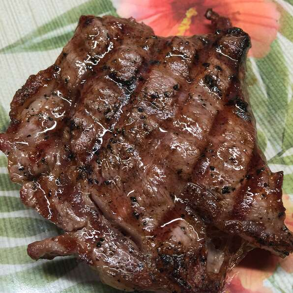

Salt & Pepper Ribeye Steak Recipe

Description
This Ribeye Steak is perfectly seared with salt and pepper to bring out the exquiste flavor of the meat
Ingredients
- 6-8 ounce ribeye steak
- 1 tablespoon kosher salt
- 1.5 teaspoons black pepper
- 1 tablespoon OR as needed vegetable oil
- 2 tablespoons unsalted butter
Steps
- Two days before cooking, salt both sides of each steak with 1/2 teaspoon kosher salt per steak.
Place steaks in an airtight container and refrigerate until ready to cook.
- Remove the steaks from the refrigerator about 30 minutes prior to cooking. Sprinkle both sides of steak with black pepper.
- Heat cast iron pan over medium-high heat until very hot. Add vegetable oil and heat until oil shimmers.
- Carefully place steaks in pan. Cook until brown and hard-seared on one side, 4 to 5 minutes.
- Turn steaks and top with one teaspoon butter. Cook for 3 to 4 more minutes or to desired doneness.
You may need to cook the steaks in batches depending on the size of your cast iron pan. Keep the cooked steaks in a 170 degree F oven until ready to serve.